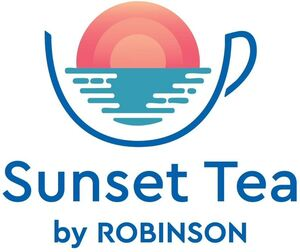

Trade Mark Journal No.2025/043 24 October 2025
WO0000001880704 (16,21,30,41,43)
Office of origin: Germany
Date of International Registration:11 July 2025
Date of designation in the UK:
11 July 2025

The mark contains the colours orange, blue, turquoise and white.
International priority date claimed: 17 January 2025
(Germany)
- Class 16
- Paper; cardboard; transfers [decalcomanias]; stickers [stationery]; stickers [decalcomanias]; containers for stationery; beer mats; paper bags for packaging; plastic bags for packing; paper bags; pads of paper and writing paper; printed matter, in particular books, leaflets, brochures, newspapers, magazines [periodicals]; photographs; postcards; tickets, entry tickets, calendars, cards, catalogues; writing instruments, in particular pens, pencils; fountain pens; artists' materials; paintbrushes; office requisites, except furniture, in particular drawing pins; sealing stamps; inking pads; holders for notepads; instructional and teaching material (except apparatus); cardboard for packaging; paper for packaging; plastic materials for packaging; printers' type; paper flags and pennants made of paper; adhesives for stationery purposes; mats and coasters of paper for glasses, mugs, cups, coffee and tea pots; document holders [stationery]; books for children; sticker activity books; cardboard cake boxes; table napkins of paper.
- Class 21
- Household or kitchen utensils and containers, in particular boxes, soap boxes, food storage jars, insulated containers; salt cellars; pepper pots; beaters, non-electric; pots; frying pans, including woks; non-electric fondue set; non-electric appliances for making yogurt; soap dispensers; soap holders; combs, sponges; brushes [except paint brushes], in particular brushes for footwear; material for brush making; toothbrushes, including electrical toothbrushes; articles for cleaning purposes; deodorising apparatus for personal use; glass, unworked or semi-worked, except building glass; glassware, porcelain and earthenware, in particular vases, decanters, flasks, glasses [receptacles]; works of art made of porcelain, clay or glass; fruit bowls; napkin rings; cosmetic utensils; perfume vaporizers; shaving brushes; eyeglass cleaning cloths; bottles, in particular insulating flasks, refrigerating bottles, demijohns and drinking bottles for sports; fruit presses, non-electric, for household purposes; corkscrews; bottle openers; fitted picnic baskets, including dishes; portable coolers, non-electric; isothermic bags; services [dishes]; coffee services [tableware]; tea services [tableware]; chopsticks; shoe horns; shoe trees [stretchers]; coasters, not of paper and other than table linen; trivets [table utensils]; mats and coasters for glasses, mugs, cups, coffee and tea pots [table utensils], not of paper or textile; toothpicks; toothpick holders; disposable table plates; flower-pot covers, not of paper; watering cans; ice buckets; gardening gloves; polishing gloves; oven mitts; gloves for household purposes; baby baths, portable; potties for children; non-electric heaters for feeding bottles; bread boards; cutting boards; piggy banks; waste paper baskets; sugar tongs; nutcrackers; cookie jars; tea caddies; tea strainers.
- Class 30
- Coffee; tea; cocoa; sugar; rice; tapioca; sago; artificial coffee; flour and preparations made from cereals; bread; pastry and confectionery; edible ices; honey; treacle; yeast; baking powder; salt; mustard; vinegar; sauces [including salad dressings]; spices; ice for refreshment; sweets, in particular fruit and wine gums, candy, lozenges [confectionery]; lollies; chocolate; sweets, chocolates and/or pastries packed in advent calendars and Christmas stockings; ice cream; tea leaves; tea mixtures; tea cakes; biscuits.
- Class 41
- Basic training; advanced training; education information; instructional services, in particular correspondence courses and language training; entertainment; film production, other than advertising films; DVD and CD-ROM film production; production of radio and television programs; production of television programs; rental of films and videos; presentation of films and videos; organisation and arranging of entertainment events with performing artists; entertainer services; musical performances; circus performances; public entertainment; theatrical performances; arranging and conducting of concerts; ticket agency services [entertainment]; organization and providing of an after school children's entertainment centre featuring educational entertainment; holiday camp services (entertainment); physical education services; language training; training and fitness club services; providing nursery schools, cinema theaters, discotheque services, providing museum facilities [presentation, exhibitions], amusement arcades, amusement park services; sport camp services; providing golf courses, tennis courts, horse riding facilities and sports facilities; rental of skin diving equipment; organization of sports competitions; organization of cultural and sporting events; arranging of cultural and sporting events; reservation services for sporting, scientific and cultural events; game services provided on-line [from a computer network]; rental of recorded data carriers (films, music, games), projector apparatus and the accessories thereof; rental of newspapers and magazines; writing of texts, other than publicity texts; publication of printed matter also in the form of electronic media including CD-ROMs, other than publicity texts, in particular books, magazines and newspapers; publication of printed matter in electronic form, except for publicity purposes, in particular magazines and newspapers, including in the Internet; publication of texts, except publicity texts, in particular of books, magazines and newspapers, including in the Internet; organization of exhibitions for cultural and teaching purposes; entertainment and educational services provided by recreation and amusement parks; services of an interpreter; services of a translator; photography; radio entertainment; television entertainment; consultation provided by telephone call centres and hotlines in the field of education, training and further training, and entertainment; consultation provided by telephone call centres and hotlines in the field of reservation services for sporting, scientific and cultural events; information about entertainment events, in particular provided via online networks and the Internet; cultural, artistic, leisure, social entertainment and sporting activities, including the arranging thereof; ticket reservation services for concerts, exhibitions, museum visits, guided tours, theme parks, amusement parks, online virtual guided city tours, zoo and aquarium visits, theatres, cultural events, sporting events, sporting activities, leisure activities, shows, whisky tastings, beer tastings, gin tastings, wine tastings, food tastings, fashion shopping tours, cookery and baking courses for cultural, educational and entertainment purposes; booking and reservation services for entertainment and educational events; ticket reservation and booking services for educational and entertainment events as well as cultural and sporting activities and events; entertainment booking services; entertainment relating to wine tasting; booking in relation to educational and entertaining culinary experiences such as whisky tastings, wine tastings and food tastings; booking in relation to gastronomic seminars, wine seminars, cookery courses and baking courses; arranging of entertainment events and leisure activities; arranging and conducting of congresses, seminars, lectures and multimedia displays; entertainment services provided in virtual environments that allow users to interact for recreational, leisure or entertainment purposes; provision of virtual reality game services via an interactive website; entertainment services provided via downloadable digital files, authenticated by non-fungible tokens [NFTs], for use in virtual environments; entertainment services in the form of virtual reality games where the user can purchase virtual clothing; entertainment services in the form of virtual reality games featuring the provision of virtual hotel rooms; organizing and conducting events for entertainment or educational purposes, in a virtual environment, in particular, cabaret shows, music shows, conferences, competitions, contests, games; simulated rental of meeting rooms in virtual environments [entertainment]; simulated temporary accommodation in virtual environments [entertainment]; swimming pool and water chute complex services; ticket reservation and booking services for events, concerts, exhibitions, museum visits, theme parks, amusement parks, online virtual guided city tours, zoo and aquarium visits, theatres, cultural events, sports events, sporting activities, leisure activities, shows, whisky tastings, beer tastings, gin tastings, wine tastings, food tastings, guided tours, escorted shopping tours, cookery and baking courses for entertainment, sporting and cultural purposes; tea ceremony instruction; conducting tea ceremonies; simulated hotel room reservation services provided in virtual environments for entertainment purposes.
- Class 43
- Providing temporary accommodation; tourist home services; providing of food and drinks for guests; wine tasting services (provision of beverages); club services for the provision of food and drink; accommodation bureau services; booking agency services for holiday accommodation; providing and rental of holiday homes, holiday flats and apartments; rental of temporary accommodation in holiday homes and flats; providing room reservation; providing hotel services; hotel accommodation services; hotel reservations; resort hotel services; restaurant services provided by hotels; hotel services for preferred customers; providing hotel information via a website; hotel reservation services provided via the Internet; reception services for temporary accommodation [management of arrivals and departures]; providing motel services; catering; boarding house services; rental of meeting rooms; provision of conference, exhibition and meeting facilities; bar services; restaurant services; providing food and drinks in Internet cafés; consultation provided by telephone call centres and hotlines in the field of accommodation services, providing and rental of holiday homes, room reservation services and hotel reservation as well as accommodation and catering for guests; making reservations and bookings for restaurants and meals; provision of food and drink in tea rooms.
Robinson Club GmbH
Representative: Sonja Heß c/o TUI AG, Karl-Wiechert-Allee 23, 30625 Hannover, GERMANY